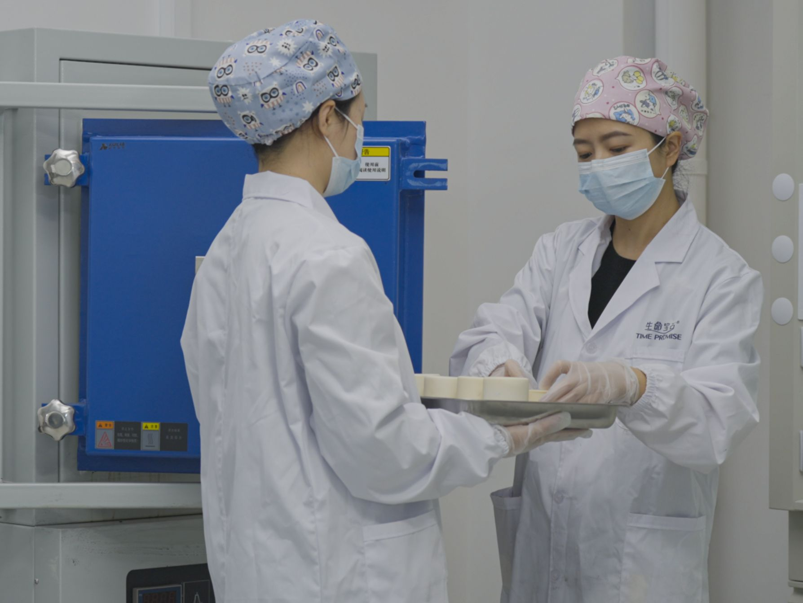

High Pressure High Temperature (HPHT) diamond growth is the dominant synthesis method for memorial diamond manufacturing. Unlike Chemical Vapor Deposition (CVD), which grows diamond from a methane-hydrogen plasma at moderate pressure, HPHT replicates the geological conditions of the Earth's mantle inside an industrial press. This article provides a technical overview of the physics, chemistry, and engineering behind HPHT diamond growth — written for B2B partners, memorial service providers, and industry professionals evaluating manufacturing capabilities.
Understanding HPHT mechanics matters for partners because it directly determines yield rates, color consistency, clarity grades, and production timelines. A laboratory's control over pressure stability, temperature gradients, and catalyst chemistry separates industrial-grade output from inconsistent small-batch results. BioGem Lab's technology page details our specific press infrastructure and process validation protocols.
TL;DR — Quick Summary
HPHT diamond synthesis replicates Earth's mantle conditions — pressures exceeding 5 GPa and temperatures of 900–1,300°C — inside industrial presses to grow real diamonds from purified bio-carbon. A laboratory's control over pressure stability, temperature gradients, and catalyst chemistry directly determines yield rates, color consistency, clarity grades, and production timelines. This article covers the physics, growth mechanisms, and industrial systems that separate industrial-grade output from inconsistent small-batch results.
The Physics of HPHT Diamond Synthesis
Natural diamonds form approximately 150-200 kilometers below the Earth's surface, where pressure exceeds 5 GPa (50,000 atmospheres) and temperatures range from 900°C to 1,300°C. HPHT synthesis reproduces these conditions in a controlled industrial environment using specialized press systems.
Pressure-Temperature Phase Space
The carbon phase diagram defines the boundary conditions for diamond synthesis. At ambient pressure and temperature, graphite is the thermodynamically stable allotrope of carbon. Diamond becomes stable only above approximately 1.5 GPa at 1,000°C, and the growth window expands significantly above 5 GPa and 1,300°C.
In practice, memorial diamond manufacturers operate in the 5-6 GPa range at 1,300-1,600°C. This places the growth chamber well within the diamond stability field, providing a thermodynamic driving force for carbon to crystallize in the sp³ tetrahedral lattice rather than the sp² hexagonal structure of graphite.
Key Operating Parameters
- Chamber pressure5.0 – 6.5 GPa
- Growth temperature1,300 – 1,600°C
- Catalyst alloyNi-Mn-Co / Fe-Ni
- Temperature gradient20 – 50°C across chamber
- Growth duration30 – 60 days
The Diamond Stability Field
The diamond stability field is the region of the carbon phase diagram where diamond is thermodynamically favored over graphite. In HPHT synthesis, we do not merely reach this field — we engineer conditions that maximize the rate of diamond crystallization while minimizing defect formation.
The Berman-Simon line, which approximates the graphite-diamond equilibrium boundary, is a critical reference. Operating significantly above this line (higher pressure relative to temperature) accelerates nucleation but increases internal stress. Operating too close to the line slows growth and reduces yield. Industrial optimization finds the midpoint that balances growth rate against crystal quality.
HPHT Growth Mechanism
HPHT diamond growth is not a simple phase transition. It is a multi-step transport-limited crystallization process involving carbon dissolution, diffusion through a molten metal catalyst, supersaturation at a seed crystal, and lattice incorporation. Each step introduces variables that affect the final diamond's properties.
Carbon Dissolution in Molten Metal Catalyst
The carbon source — whether purified bio-carbon graphite from hair or fur, or synthetic graphite feedstock — is placed in the high-temperature zone of the growth cell. A molten metal catalyst, typically a nickel-manganese-cobalt alloy with iron additives, surrounds the carbon source.
At 1,400°C, this alloy is fully molten and acts as a solvent for carbon. The solubility of carbon in Ni-Mn-Co at these temperatures is approximately 2-4 wt%, depending on the exact alloy ratio. Carbon atoms detach from the graphite source, dissolve into the molten metal, and form a saturated solution.
The choice of catalyst alloy directly influences growth rate, crystal morphology, and impurity incorporation. Nickel-rich alloys promote faster growth but may introduce nitrogen-related yellow coloration. Iron-rich alloys slow growth but can improve clarity. Our manufacturing page documents the catalyst optimization protocols we employ for consistent memorial diamond output.
Supersaturation and Nucleation
A temperature gradient is maintained across the growth cell — typically 20-50°C — with the carbon source at the hotter end and the diamond seed crystal at the cooler end. Because carbon solubility in the molten catalyst decreases with temperature, the metal becomes supersaturated with carbon as it flows toward the cooler seed zone.
This supersaturation is the thermodynamic driving force for diamond crystallization. Carbon atoms precipitate onto the seed crystal, extending the existing diamond lattice atom by atom. The process is analogous to how sugar crystallizes from a supersaturated solution, but at 1,400°C and 5 GPa.
Nucleation control is critical. Unwanted spontaneous nucleation — where new diamond crystals form in the bulk metal rather than on the seed — wastes carbon and reduces yield. It is suppressed by precise control of the temperature gradient, pressure stability, and seed surface preparation. A well-prepared seed has a polished (100) or (111) orientation that promotes epitaxial layer-by-layer growth.
Crystal Growth Kinetics
Once stable nucleation is established on the seed, the growth front advances at a rate determined by carbon transport, surface attachment kinetics, and lattice defect energetics. Typical growth rates for gem-quality HPHT diamonds range from 0.1 to 0.5 mm per day.
Growth rate is not uniform across the crystal. The fastest growth occurs on {100} and {111} faces, while edge and corner regions grow more slowly. This anisotropy produces the characteristic cubo-octahedral morphology of as-grown HPHT crystals. For memorial diamonds, this raw crystal is later cut and polished into a round brilliant or other desired shape, with the cut designed to maximize the yield from the original crystal volume.

Industrial HPHT Systems for Memorial Diamonds
Two press architectures dominate industrial HPHT diamond production: the belt press and the cubic press. Each has distinct advantages for memorial diamond manufacturing, and many laboratories maintain both systems to cover different product ranges.
Belt Press
The belt press, originally developed by General Electric in the 1950s, uses two opposing tungsten carbide anvils separated by a gasketed cylindrical chamber. A steel or pyrophyllite belt surrounds the chamber, containing the radial expansion under pressure.
Belt presses typically generate 2-6 GPa in a relatively small volume (10-50 mm³). Their advantage is exceptional pressure stability and temperature uniformity, making them ideal for gem-quality single-crystal growth. The small chamber size means each run produces one diamond at a time, but with outstanding clarity and color control. For memorial diamonds where each stone represents a unique carbon source, the belt press is the preferred platform for premium production.
Cubic Press
The cubic press applies pressure simultaneously from six directions using six anvils arranged in a cubic geometry. This multi-axial loading enables significantly larger chamber volumes — up to 1,000 mm³ or more — and higher throughput.
Cubic presses are the workhorse of industrial synthetic diamond manufacturing, particularly for abrasive and tooling applications where large volumes of small crystals are needed. For memorial diamonds, cubic presses are sometimes used for batch runs of standard-size stones where multiple seeds are placed in a single large chamber. However, the temperature uniformity is lower than in belt presses, which can introduce color variation across the batch.
Read our HPHT vs CVD comparison for a broader analysis of synthesis platform selection in memorial diamond production.
Process Parameters and Quality Control
Consistent memorial diamond quality requires continuous monitoring and adjustment of multiple process parameters throughout the 30-60 day growth cycle. Small deviations in pressure, temperature, or catalyst chemistry can produce visible defects, color shifts, or clarity degradation.
Temperature Gradient Optimization
The temperature gradient between the carbon source zone and the seed zone is the primary control variable for growth rate. A steeper gradient increases carbon transport and accelerates growth, but excessive gradients can destabilize the growth front, producing inclusions and strain patterns.
Memorial diamond laboratories typically operate with a 30-40°C gradient for optimal quality-speed balance. The gradient is maintained through controlled heating element positioning and thermal insulation geometry within the growth cell.
Pressure Stability Requirements
Pressure fluctuations during growth create stress inclusions and crack networks. Industrial HPHT systems maintain pressure within ±0.1 GPa throughout the growth cycle through hydraulic servo control and real-time pressure transducer feedback. A single pressure spike above 7 GPa can fracture the growth cell assembly, terminating the run and losing the carbon charge.
Growth Duration and Rate
Memorial diamond sizes range from 0.1 carat to over 1.0 carat. The required growth duration scales non-linearly with target size because larger crystals require lower growth rates to maintain clarity. Under BioGem Lab standard parameters, HPHT growth typically requires 18–25 days regardless of target size, with larger stones grown at proportionally lower growth rates to maintain clarity.
Typical Growth Parameters by Target Size
- 0.3 ct (4.2 mm)20 – 25 days
- 0.5 ct (5.2 mm)30 – 35 days
- 1.0 ct (6.5 mm)45 – 60 days
- 1.5 ct (7.4 mm)70 – 90 days
Memorial Diamond-Specific Considerations
Memorial diamonds introduce two additional variables not present in standard synthetic diamond production: the carbon source is biological rather than industrial graphite, and the color and clarity expectations are set by the consumer's emotional investment in the result.
Bio-Carbon Feedstock Compatibility
Hair, fur, and botanical carbon are first processed into purified graphite through controlled graphitization at 2,000-2,800°C under inert atmosphere. The resulting bio-graphite is chemically indistinguishable from synthetic graphite feedstock — both are ≥99.95% carbon with the same hexagonal layered structure.
However, bio-carbon may carry trace elements from the source organism: sulfur from keratin proteins, metal ions from environmental exposure, or nitrogen compounds. These traces must be eliminated during purification because even parts-per-million levels of nitrogen will produce yellow coloration in the final diamond. Our article on carbon-to-diamond transformation details the full purification pipeline.
Color Control Through Doping and Atmosphere
Most memorial diamond customers request near-colorless stones (D-G on the GIA scale). Achieving this requires two measures: removing nitrogen from the growth environment, and adding nitrogen getters such as titanium or aluminum to the catalyst alloy.
BioGem Lab does not offer fancy color diamonds. Our standard production yields E–H near-colorless only. The following describes how color is controlled in HPHT synthesis for educational purposes: blue tones from boron doping, yellow from nitrogen presence, and near-colorless from nitrogen exclusion.
Explore OEM Memorial Diamond Manufacturing
White-label HPHT synthesis infrastructure, validated process protocols, and dedicated production capacity for B2B partners.
Request OEM ConsultationFrequently Asked Questions
What does HPHT stand for in diamond manufacturing?
HPHT stands for High Pressure High Temperature. It is a diamond synthesis method that replicates the natural geological conditions under which diamonds form in the Earth's mantle — approximately 5-6 GPa of pressure and 1,300-1,600°C temperature — within an industrial press system.
How long does HPHT diamond growth take?
HPHT diamond growth typically requires 18 to 25 days for a 0.5 to 1.0 carat gem-quality crystal. Growth rate depends on temperature gradient, catalyst composition, and seed crystal orientation. Larger stones or color-specific growth may extend to 25 days.
What metal catalyst is used in HPHT diamond synthesis?
The most common catalyst is a nickel-manganese-cobalt (Ni-Mn-Co) alloy, often combined with iron. This molten metal solvent dissolves carbon at high temperature and transports it to the cooler diamond seed zone where supersaturation drives crystallization.
Can biological carbon be used in HPHT diamond growth?
Yes. Purified bio-carbon from hair, fur, nails, or botanical material is converted to graphite through controlled graphitization, then used as the carbon source in standard HPHT synthesis. The resulting diamond is structurally identical to natural or synthetic diamonds.
What is the difference between belt press and cubic press?
A belt press uses two opposing anvils to generate uniaxial pressure, producing a smaller but highly stable growth chamber ideal for gem-quality single crystals. A cubic press applies pressure from six directions simultaneously, enabling larger chamber volumes and higher throughput for industrial diamond production.
How does temperature affect diamond color in HPHT growth?
Temperature and catalyst composition determine nitrogen incorporation into the diamond lattice, which controls color. Lower temperatures (1,300-1,400°C) with nitrogen getters produce near-colorless (E–H) diamonds. Higher temperatures or nitrogen presence can produce yellow tints; boron doping produces blue in specialized applications outside standard memorial diamond production. Precise thermal control is essential for consistent color in memorial diamond production.
Related Articles
Patent-backed carbon extraction technology. Patent No. ZL 201010565778.9